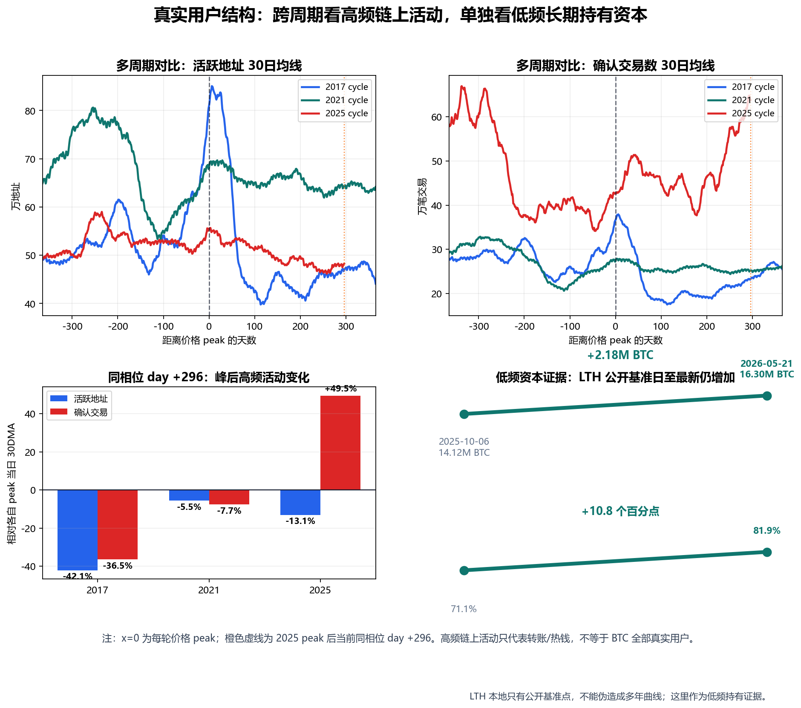
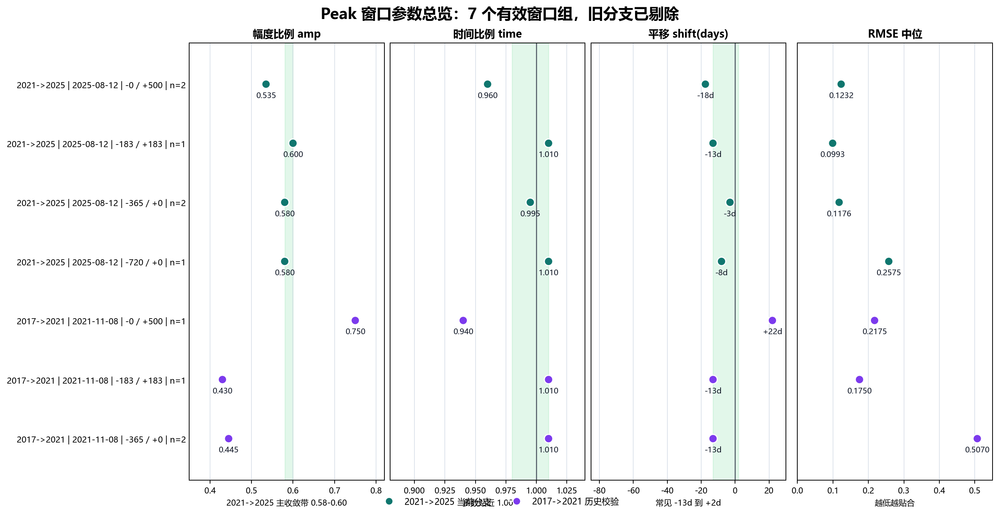

生成日期：2026-06-08
用途：家庭内部讨论，判断是否支持一笔小额、分批、无杠杆的 BTC
配置。
核心口径：只保留第一性原理、真实用户结构、peak 结构样本、AHR999
多年横向结构对比。
这不是押身家，也不是短线投机。可以支持的是：在不影响养老、家庭现金流和应急金的前提下，用很小一部分可承受损失的钱，分批买一点 BTC。
理由只有四条：
| 证据 | 现在看到的事实 | 对买入的意义 |
|---|---|---|
| 第一性原理 | BTC 的账本、发行上限、共识、自托管属性没有因为价格下跌而失效 | 价格跌，不等于协议坏 |
| 真实用户结构 | 多周期看，链上高频活动峰后波动很大；真正的大头是 long holder、ETF、财库、托管账户背后的低频资本 | BTC 更像储备资产，不是日常支付网络 |
| peak 结构样本 | 2025 peak 统一锚定 2025-08-12；剔除旧分支后，正式报告使用 10 条样本、7 个有效窗口组 | 不应该把仓位一次打完，要尊重底部时间带 |
| AHR999 多年横向结构 | 2026-06-05 重算 AHR999 为 0.295，已经接近 2018、2022 的深底区域 | 支持进入 2026 年 8 月后的分批计划，但它不是单独买入理由 |
最终动作很简单：
从第一性原理看，BTC 最底层的问题不是今天涨跌多少，而是这套系统还是否成立。
| 第一性原理问题 | 当前状态 | 解释 |
|---|---|---|
| 账本是否还可信 | 没有被破坏 | 交易历史仍由全网节点验证，篡改成本仍极高 |
| 发行规则是否还可信 | 没有被破坏 | 2100 万枚上限和减半规则没有改变 |
| 共识是否还在 | 没有破裂 | 节点、矿工、交易所、钱包仍承认 BTC 主规则 |
| 自托管属性是否还在 | 没有消失 | 用户仍可自持私钥并无需许可转移价值 |
| 安全预算是否立刻失效 | 没有立刻失效 | 矿工收入会受价格影响，但难度调整机制会让系统再平衡 |
所以，价格大跌可以说明边际买盘弱了，但不能直接说明 BTC 协议坏了。真正会破坏 BTC 的，是 2100 万上限被修改、全节点验证能力严重中心化、矿工或矿池被可控实体集中、长期手续费无法支撑安全预算，或者市场不再认为 BTC 是最可信的数字稀缺资产。
这一轮下跌如果主要来自赎回、减仓、清算、风险偏好下降，那属于价格发现层面的变化，不是第一性原理层面的崩塌。
BTC 的真正用户不能只看每天链上转账的人。BTC 的核心用途不是高频支付，而是不可增发、全球结算、可自托管的稀缺资产。因此，用户要按交易频率和持币规模分层看。

这张图把 2017、2021、2025 三轮价格 peak 前后各一年对齐。x=0 是每轮价格 peak；橙色虚线是本轮 2025-08-12 peak 到当前数据日 2026-06-04 的同相位 day +296。这样看的重点不是“某一天数值高低”，而是不同周期里高频链上活动的波动形态。
| 周期 | peak 锚点 | 同相位观察日 | 活跃地址 30日均线 | 变化 | 确认交易数 30日均线 | 变化 | 一眼结论 |
|---|---|---|---|---|---|---|---|
| 2017 | 2017-12-16 | 2018-10-08 | 81.0 万 -> 46.9 万 | -42.1% | 36.6 万 -> 23.3 万 | -36.5% | 峰后高频活动明显冷却 |
| 2021 | 2021-11-08 | 2022-08-31 | 68.2 万 -> 64.4 万 | -5.5% | 27.3 万 -> 25.2 万 | -7.7% | 高频活动回落但没有断崖 |
| 2025 | 2025-08-12 | 2026-06-04 | 55.5 万 -> 48.2 万 | -13.1% | 42.7 万 -> 63.8 万 | +49.5% | 地址人数下降，交易笔数反升，说明交易数不能直接等于真实用户 |
这张表要表达的不是“链上活跃度没变”，而是：链上高频活动本来就不是稳定增长的用户曲线。2017 峰后大幅冷却，2021 峰后小幅回落，2025 当前同相位下活跃地址下降、确认交易数反而上升。交易笔数会受平台归集、批量转账、UTXO 整理和链上结构变化影响，所以不能把“每天有多少笔交易”直接当成 BTC 的真实用户数量。
| 层级 | 观察口径 | 对比基准 | 最新观察 | 变化 | 一眼结论 |
|---|---|---|---|---|---|
| 低频长期持有 | long holder 供应 | 公开基准日 2025-10-06 约 1,412 万 BTC | 2026-05-21 约 1,630 万 BTC | +218 万 BTC | 公开基准日至最新继续增加 |
| 低频长期持有 | long holder 占流通供应比例 | 公开基准日 2025-10-06 约 71.1% | 2026-05-21 约 81.9% | +10.8 个百分点 | 低频持币占比提高 |
关键是另一边同时发生了更重要的变化：long holder 供应和占比都在上升。高频使用可以下降，但低频持有资本没有因为价格下跌而消失。
| 用户类型 | 交易频率 | 变化方向 | 是否是价值大头 |
|---|---|---|---|
| 链上活跃用户 / 散户热钱 | 高频或中频 | 跨周期波动很大，不是稳定用户曲线 | 不是价值大头 |
| 长期持有者 long holder | 低频，核心动作是不动 | 公开数据基准后仍在吸筹 | 是核心大头 |
| ETF、公司、政府、托管机构背后的持有人 | 低频或平台内记账 | 持币规模大，集中度高 | 是本轮新增大头 |
这才是核心：真实用户不一定每天转账。对 BTC 这种资产来说，长期不动本身就是一种使用方式。
| 口径 | 数据 | 含义 |
|---|---|---|
| 非零 UTXO 地址 | 约 5,625 万个 | 地址很多，不等于每个地址都有同等价值 |
| 大于等于 100 BTC 的地址 | 约 20,191 个，占地址数约 0.04% | 数量很少 |
| 这些大额地址持有供应 | 约 61.7% | 价值大头在大额低频账户 |
| 美国现货 BTC ETF 持币 | 约 1,302,189 BTC，约占 2100 万上限的 6.201% | 传统金融入口已经是大持币通道 |
| 公开公司和政府 BTC 财库 | 约 1,782,053 BTC，约占总供应 8.49% | 公司和政府财库成为重要低频持有者 |
结论是：
BTC 的人头用户和散户交易频率不一定增长，但 BTC 的资本用户和 long holder 没有消失，反而更长期化、机构化、集中化。
这不是没有风险。集中化会带来 ETF 赎回、托管、监管和财库公司踩踏风险。但从基本面角度，它说明 BTC 越来越像数字黄金或储备资产，而不是日常支付网络。
这部分是最近真正有价值的研究：不是用一堆变量猜，而是把不同周期的 peak 前后结构拿出来对齐，比较幅度比例、时间比例和平移。
本轮 2025 peak 统一锚定为 2025-08-12。剔除旧分支后，正式报告使用 10 条样本，汇总成 7 个有效窗口组。这里不能只展示一个窗口截图，否则看不出“多窗口归纳”的价值。下面两张图把 7 个窗口全部展开：第一张看每个窗口的参数分布，第二张看每个窗口的形状对齐。

| 对比周期 | 右侧 peak 假设 | 窗口 | 样本数 | 幅度中位 | 时间中位 | 平移中位 | RMSE 中位 |
|---|---|---|---|---|---|---|---|
| 2017 -> 2021 | 2021-11-08 | 0 / +500 | 1 | 0.750 | 0.940 | +22d | 0.2175 |
| 2017 -> 2021 | 2021-11-08 | -183 / +183 | 1 | 0.430 | 1.010 | -13d | 0.1750 |
| 2017 -> 2021 | 2021-11-08 | -365 / +0 | 2 | 0.445 | 1.010 | -13d | 0.5070 |
| 2021 -> 2025 | 2025-08-12 | 0 / +500 | 2 | 0.535 | 0.960 | -17.5d | 0.1232 |
| 2021 -> 2025 | 2025-08-12 | -183 / +183 | 1 | 0.600 | 1.010 | -13d | 0.0993 |
| 2021 -> 2025 | 2025-08-12 | -365 / +0 | 2 | 0.580 | 0.995 | -3d | 0.1176 |
| 2021 -> 2025 | 2025-08-12 | -720 / +0 | 1 | 0.580 | 1.010 | -8d | 0.2575 |
| 结构问题 | 观察结果 | 含义 |
|---|---|---|
| 本轮相对 2021 的幅度 | 2025-08-12 peak 分支主要收敛在 0.58-0.60 | 幅度明显退火 |
| 本轮相对 2021 的时间 | 多数贴近 1.00，常见 0.98-1.01 | 时间结构没有明显压缩 |
| 平移 | 常见在 -13d 到 +2d | 结构没有大幅乱掉 |
| peak 锚点 | 统一使用 2025-08-12 | 旧分支不进入正式报告结论 |
这对执行的意义很直接：如果时间比例接近 1，本轮见底不应该轻易提前到 6 月，也不应该因为价格波动临时抢跑。7 个有效窗口共同支持的是“按时间窗口分批等待”，不是“今天就是最低点”。
AHR999 只作为估值辅助，不单独决定买入。正确用法不是看一个孤立数值，也不是看价格条形图，而是把多年结构放在同一条横轴上比较。
下图把 2017、2021、2025 三轮都按价格顶部对齐，2025 顶部统一使用 2025-08-12。横轴是距顶部的天数，纵轴是 AHR999。上方过热区域被截断，只看低估结构。

| 周期 | 价格顶部 | AHR999 低点日期 | 距顶部天数 | AHR999 低点 | 结构含义 |
|---|---|---|---|---|---|
| 2017 顶后 | 2017-12-16 | 2018-12-15 | 第 364 天 | 0.272 | 历史深底区 |
| 2021 顶后 | 2021-11-08 | 2022-11-09 | 第 366 天 | 0.260 | 历史深底区 |
| 2025 顶后 | 2025-08-12 | 2026-02-05 | 第 177 天 | 0.280 | 本轮已出现一次深底读数 |
| 当前 | 2025-08-12 | 2026-06-05 | 第 297 天 | 0.295 | 仍贴近历史深底区 |
这说明 AHR999 口径下，本轮价格已经重新回到历史深底附近。但 AHR999 不能替代 peak 结构样本：它只能说明价格低估，不能说明最低点已经出现。
零配置等于认为 BTC 没有任何长期配置价值。但当前四条证据并不支持零配置：
| 问题 | 当前回答 |
|---|---|
| 协议是否坏了 | 没有看到第一性原理层面的破坏 |
| 真实用户是否消失 | 没有。低频资本用户和 long holder 仍在 |
| 当前价格是否高估 | AHR999 已接近历史深底区 |
| 周期结构是否完全失真 | 7 组有效 peak 样本显示时间结构仍有延续性 |
所以，合理动作不是重仓，而是小额参与。
不能多买的核心原因不是“我们不看好 BTC”，而是 BTC 的收益和风险同时存在。它不是一家会赚钱、会分红、会回购、会持续产生现金流的公司。BTC 本身没有股息，也没有利润表，不能像好生意一样靠经营现金流长期给持有人分钱。
BTC 更接近一种抗通胀、抗货币贬值、抗信用扩张的稀缺资产。它的长期价值来自稀缺性、共识和别人愿意用更高价格持有它，而不是来自内生现金流。因此它可以作为家庭资产里的小额对冲，但不能成为家庭安全的核心依赖。
| 资产属性 | 对收益的意义 | 对仓位的结论 |
|---|---|---|
| 没有股息 | 持有期间不会自动产生现金收入 | 不能指望它替代稳定收入资产 |
| 没有经营利润 | 不是一家会持续赚钱的好生意 | 不能按“买优秀公司”的逻辑重仓 |
| 价格来自共识和稀缺性重估 | 上涨空间存在，但依赖市场重新定价 | 可以小额参与，不能赌身家 |
| 高波动、可长期下跌或横盘 | 判断对了也可能熬很久 | 必须分批，必须有现金流缓冲 |
| 集中化、托管、监管、ETF 赎回、财库踩踏风险 | 短期会放大下跌 | 仓位上限必须提前定死 |
因此买入上限必须提前定死：
| 纪律 | 说明 |
|---|---|
| 不用养老钱 | 父母生活安全永远优先 |
| 不用应急金 | 医疗、家庭现金流、房屋支出优先 |
| 不借钱 | 杠杆会把长期判断变成短期爆仓 |
| 不一次买完 | peak 结构显示时间还没完全走完 |
| 不追涨加仓 | 涨了也只按原计划执行 |
这不是价格阶梯计划。正确计划是时间窗口计划：从 2026 年 8 月开始买，不管当月价格是否刚好跌到某个点位，按月小额分批买到 2027 年 2 月。价格只用来判断“这笔买得是否舒服”，不是触发器。
| 时间 | 动作 | 价格口径 |
|---|---|---|
| 2026-08 | 第一笔小额买入 | 不等某个具体价格 |
| 2026-09 | 第二笔小额买入 | 继续按计划，不因反弹补仓 |
| 2026-10 | 第三笔小额买入 | 同时复查 long holder 是否仍在吸筹 |
| 2026-11 | 第四笔小额买入 | 价格若在 60k-55k 区间，属于合理预期范围 |
| 2026-12 | 第五笔小额买入 | 不因为短期涨跌改变总额度 |
| 2027-01 | 第六笔小额买入 | 继续保持小额、无杠杆 |
| 2027-02 | 最后一笔小额买入，结束本轮计划 | 买完后停止追加计划外仓位 |
因此，55k-60k 不是“必须等到才买”的触发线，而是本轮时间窗口内较合理的价格期望区间。真正的纪律是：从 2026 年 8 月买到 2027 年 2 月，总金额提前定死，不能因为下跌临时加码，也不能因为反弹追着补仓。
建议总金额只占家庭可投资资产中非常小的一部分。亏完也不影响生活，才有资格买。
| 错误信号 | 动作 |
|---|---|
| 2100 万上限或核心共识出现实质破坏 | 立即重新评估 |
| 自托管、出入金、转账自由被系统性压制 | 暂停买入 |
| long holder 从吸筹转为持续派发 | 暂停买入 |
| 家庭现金流或应急金需要钱 | 停止买入 |
| 买入后心态变成想梭哈、借钱、追涨 | 停止买入 |
我们希望得到的支持不是相信 BTC 一定涨，而是支持一个有边界的小额长期配置实验。
这笔钱的意义，不是赌现在马上赚钱，而是在 BTC 深度回撤、核心协议基本面未坏、long holder 仍低频吸筹、peak 结构还没有失真、AHR999 处在多年低估结构附近时，用可承受的小金额买入未来几年的可能性。
最重要的是：这笔钱不能影响家庭生活。它可以亏，可以等很多年，但不能让父母承担心理和现金流压力。
内部数据：
data/btc_merged_daily.csv：BTC 日线合并数据。data/lth_metrics.csv：long holder 供应、占比和 30
日净变化。analysis_runs/2026-06-07_parent_btc_allocation_report/blockchain_n-unique-addresses_all.csv：Blockchain.com
全历史每日活跃地址原始下载数据。analysis_runs/2026-06-07_parent_btc_allocation_report/blockchain_n-transactions_all.csv：Blockchain.com
全历史每日确认交易数原始下载数据。analysis_runs/2026-06-07_parent_btc_allocation_report/real_user_cycle_phase_summary.csv：2017、2021、2025
三轮 peak 后同相位链上活动对比表。analysis_runs/2026-06-07_parent_btc_allocation_report/real_user_structure_change_summary.csv：long
holder 低频持有资本变化汇总表。analysis_runs/2026-06-07_parent_btc_allocation_report/make_real_user_charts.py：真实用户结构图表生成脚本。analysis_runs/2026-06-07_parent_btc_allocation_report/peak_structure_report_summary.csv：按
2025-08-12 peak 锚点过滤后的正式报告 7 个有效窗口组。analysis_runs/2026-06-04_segment_experiments/segment_cycle_samples_v19_summary.csv：原始
peak 样本汇总；正式报告已剔除旧分支。analysis_runs/2026-06-07_parent_btc_allocation_report/make_peak_structure_charts.py：peak
结构 7 窗口图表生成脚本。analysis_runs/2026-06-07_parent_btc_allocation_report/png/peak_structure_all_windows_grid.png：7
个有效 peak 窗口叠合图。analysis_runs/2026-06-07_parent_btc_allocation_report/png/peak_structure_window_metrics.png：7
个有效 peak 窗口参数总览图。analysis_runs/2026-06-07_parent_btc_allocation_report/ahr999_recalc_to_2026-06-05.csv：按最新本地价格重算的
AHR999 日线。analysis_runs/2026-06-07_parent_btc_allocation_report/ahr999_cycle_overlay_summary.csv：按
2025-08-12 peak 锚点生成的 AHR999 顶后横向结构汇总。analysis_runs/2026-06-07_parent_btc_allocation_report/make_ahr999_cycle_overlay.py：AHR999
多年横向结构图生成脚本。外部来源：
免责声明：本报告是家庭内部研究材料，不是投资顾问建议。BTC 属于高波动、高不确定性资产，只适合小额、长期、可承受损失的资金。